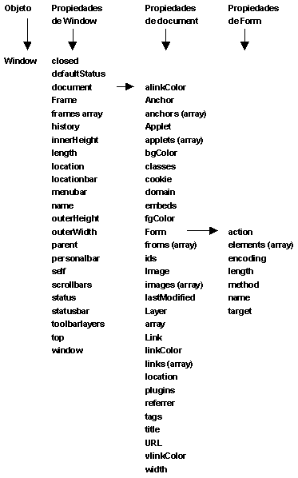

Cuando se carga una página, el navegador crea una jerarquía de objetos en memoria que sirven para controlar los distintos elementos de dicha página. Con Javascript y la nomenclatura de objetos que hemos aprendido, podemos trabajar con esa jerarquía de objetos, acceder a sus propiedades e invocar sus métodos.
Cualquier elemento de la página se puede controlar de una manera u otra accediendo a esa jerarquía. Es crucial conocerla bien para poder controlar perfectamente las páginas web con Javascript o cualquier otro lenguaje de programación del lado del cliente.
Aqui veremos la jerarquia de los objetos del navegador:

Como se puede apreciar, todos los objetos comienzan en un objeto que se llama window. Este objeto ofrece una serie de métodos y propiedades para controlar la ventana del navegador. Con ellos podemos controlar el aspecto de la ventana, la barra de estado, abrir ventanas secundarias y otras cosas que veremos más adelante cuando expliquemos con detalle el objeto.
Además de ofrecer control, el objeto window da acceso a otros objetos como el documento (La página web que se está visualizando), el historial de páginas visitadas o los distintos frames de la ventana. De modo que para acceder a cualquier otro objeto de la jerarquía deberíamos empezar por el objeto window. Por ello, no hace falta que pongamos el objeto window al empezar la jerarquia ya que el navegador lo sobrentiende.
Muchas de las propiedades del objeto window son a su vez otros objetos. Es el caso de objetos como el historial de páginas web o el objeto documento, que tienen a su vez otras propiedades y métodos.
Entre ellos destaca el objeto document, que contiene todas las propiedades y métodos necesarios para controlar muchos aspectos de la página, como veis tiene muchas propiedades de las cuales, algunas tambien son objetos como los formularios. Además, el objeto document tiene métodos para escribir en la página web y para manejar eventos de la página.